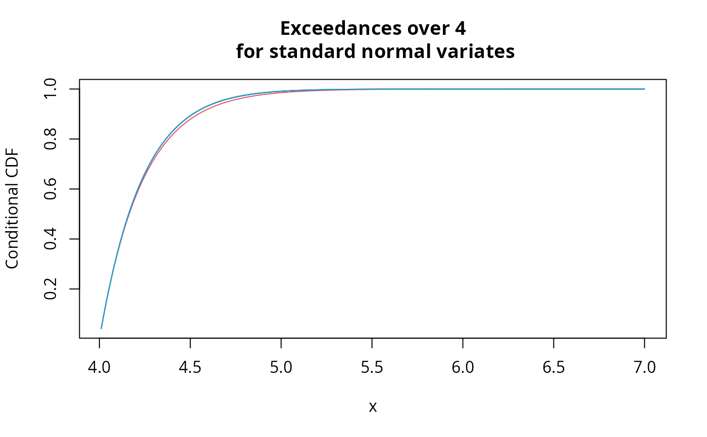
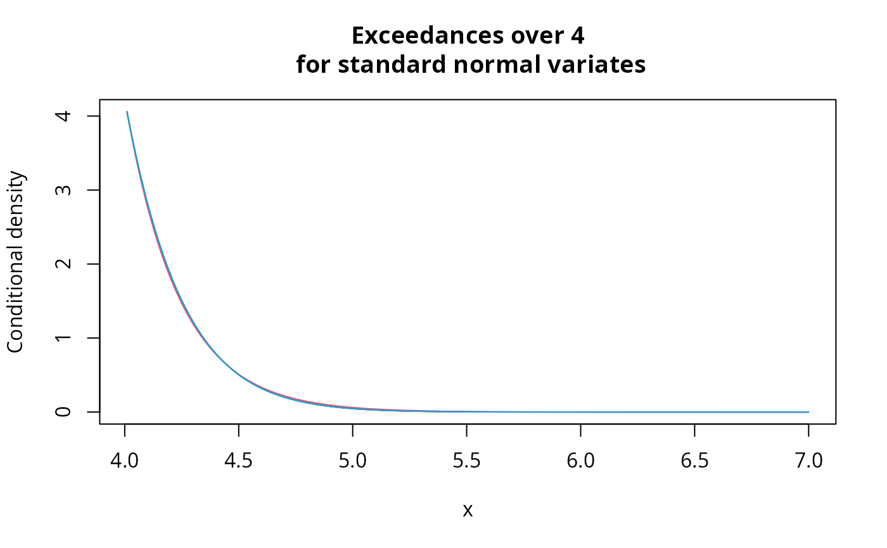

This function returns the density and distribution functions of the 3rd penultimate approximation for extremes of Smith (1987). It requires knowledge of the exact constants \(\epsilon\) and \(\rho\) described in the paper.
Usage
smith.penult.fn(
loc,
scale,
shape,
eps,
rho = NULL,
method = c("bm", "pot"),
mdaGumbel = FALSE,
...
)Arguments
- loc
location parameter returned by
smith.penultor threshold vector- scale
scale parameter returned by
smith.penult- shape
shape parameter returned by
smith.penult- eps
parameter vector, see Details.
- rho
second-order parameter, model dependent
- method
one of
potfor the generalized Pareto orbmfor the generalized extreme value distribution- mdaGumbel
logical indicating whether the function \(H_{\rho}\) should be replaced by \(x^3/6\); see Details.
- ...
additional parameters, currently ignored. These are used for backward compatibility due to a change in the names of the arguments.
Details
Let \(F\), \(f\) denote respectively the distribution and density functions and define the function \(\phi(x)\) as
$$\phi(x)=-\frac{F(x)\log F(x)}{f(x)}$$
for block maxima.
The sequence loc corresponds to \(b_n\) otherwise, defined as the solution of \(F(b_n)=\exp(-1/n)\).
The scale is given by \(a_n=\phi(b_n)\), the shape as \(\gamma_n=\phi'(b_n)\). These are returned by a call to smith.penult.
For threshold exceedances, \(b_n\) is replaced by the sequence of thresholds \(u\) and we take instead \(\phi(x)\) to be the reciprocal hazard function \(\phi(x)=(1-F(x))/f(x)\).
In cases where the distribution function is in the maximum domain of attraction of the Gumbel distribution, \(\rho\) is possibly undetermined and \(\epsilon\) can be equal to \(\phi(b_n)\phi''(b_n)\).
For distributions in the maximum domain of
attraction of the Gumbel distribution and that are class N, it is also possible to abstract from the \(\rho\) parameter by substituting the function \(H_{\rho}\) by \(x^3/6\) without affecting the rate of convergence. This can be done by setting mdaGumbel=TRUE in the function call.
Warning
The third penultimate approximation does not yield a valid distribution function over the whole range of the original distribution, but is rather valid in a neighborhood of the true support of the distribution of maxima/threshold exceedance. The function handles the most standard failure (decreasing distribution function and negative densities), but any oscillatory behaviour will not necessarily be captured. This is inherent to the method and can be resolved by `not' evaluating the functions \(F\) and \(f\) at the faulty points.
References
Smith, R.L. (1987). Approximations in extreme value theory. Technical report 205, Center for Stochastic Process, University of North Carolina, 1–34.
Examples
#Normal maxima example from Smith (1987)
m <- 100 #block of size 100
p <- smith.penult(family='norm',
ddensF=function(x){-x*dnorm(x)}, method='bm', m=m, returnList=FALSE)
approx <- smith.penult.fn(loc=p[1], scale=p[2], shape=p[3],
eps=p[3]^2+p[3]+p[2]^2, mdaGumbel=TRUE, method='bm')
x <- seq(0.5,6,by=0.001)
#First penultimate approximation
plot(x, exp(m*pnorm(x, log.p=TRUE)),type='l', ylab='CDF',
main='Distribution of the maxima of\n 100 standard normal variates')
lines(x, mev::pgev(x,loc=p[1], scale=p[2], shape=0),col=2)
lines(x, mev::pgev(x,loc=p[1], scale=p[2], shape=p[3]),col=3)
lines(x, approx$F(x),col=4)
legend(x='bottomright',lty=c(1,1,1,1),col=c(1,2,3,4),
legend=c('Exact','1st approx.','2nd approx.','3rd approx'),bty='n')
plot(x, m*dnorm(x)*exp((m-1)*pnorm(x,log.p=TRUE)),type='l', ylab='Density',
main='Distribution of the maxima of\n 100 standard normal variates')
lines(x, mev::dgev(x,loc=p[1], scale=p[2], shape=0),col=2)
lines(x, mev::dgev(x,loc=p[1], scale=p[2], shape=p[3]),col=3)
lines(x, approx$f(x),col=4)
legend(x='topright',lty=c(1,1,1,1),col=c(1,2,3,4),
legend=c('Exact','1st approx.','2nd approx.','3rd approx'),bty='n')
#Threshold exceedances
par <- smith.penult(family = "norm", ddensF=function(x){-x*dnorm(x)},
method='pot', u=4, returnList=FALSE)
approx <- smith.penult.fn(loc=par[1], scale=par[2], shape=par[3],
eps=par[3]^2+par[3]+par[2]^2, mdaGumbel=TRUE, method='pot')
x <- seq(4.01,7,by=0.01)
#Distribution function
plot(x, 1-(1-pnorm(x))/(1-pnorm(par[1])),type='l', ylab='Conditional CDF',
main='Exceedances over 4\n for standard normal variates')
lines(x, mev::pgp(x, loc=par[1], scale=par[2], shape=0),col=2)
lines(x, mev::pgp(x, loc=par[1], scale=par[2], shape=par[3]),col=3)
lines(x, approx$F(x),col=4)

#Density
plot(x, dnorm(x)/(1-pnorm(par[1])),type='l', ylab='Conditional density',
main='Exceedances over 4\n for standard normal variates')
lines(x, dgp(x, loc=par[1], scale=par[2], shape=0),col=2)
lines(x, dgp(x, loc=par[1], scale=par[2], shape=par[3]),col=3)
lines(x, approx$f(x),col=4)
